Le fichier clustering_kameans.py contient le code de l'algorithme de clustering k-means. En appellant la fonction avec les données de l'énnoncé, nous obtenons bien les même résultats.
Nous avons testé avec le jeu de données : [[2], [4], [6], [12], [24], [30]]
avec les centroides initiaux : [[2], [6]],
nous obtenons les clusters suivants :
avec les centroides initiaux : [[12], [24]],
nous obtenons les clusters suivants :
La fonction pour calculer la distance euclidienne entre deux points est améliorée afin de prendre en compte des dimensions supérieures et egalement nous avons rajoutés une fonction qui sauvegarde des graphiques pdf avec mathplotlib.
Nous avons utilisés le jeu de données fourni dans l'énnoncé:
M1 : [-2, 3] M2 :[-2, 1] M3 : [-2, -1] M4 : [2, -1] M5 : [2, 1] M6 : [1, 0]
L'appel a la fonction kmeans avec les parametres savefigs=True et savePath= 'kmeans_graphs/' permet de sauvegarder les graphiques dans un fichier pdf dans le dossier kmeans_graphs. La fonction main permet de lancer l'algorithme sur les deux jeux de données.
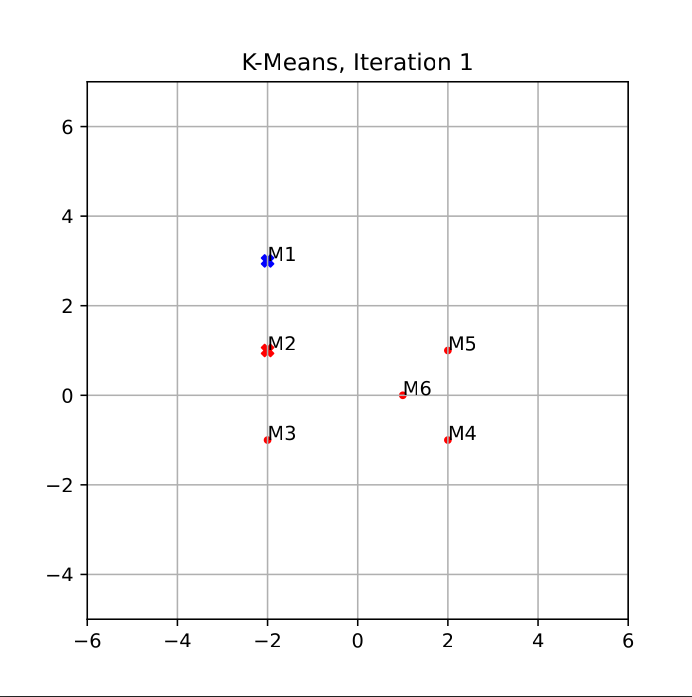 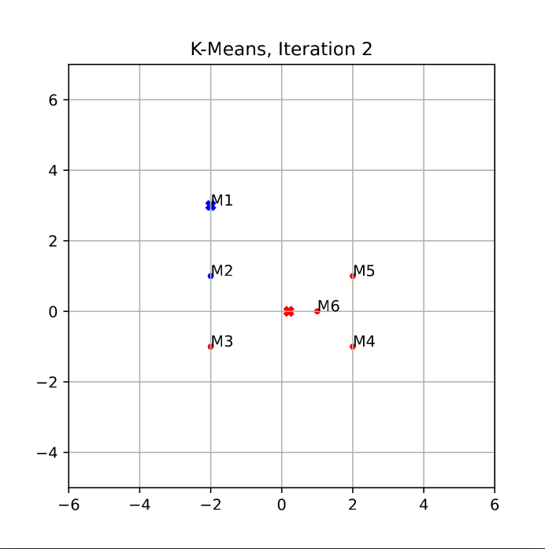 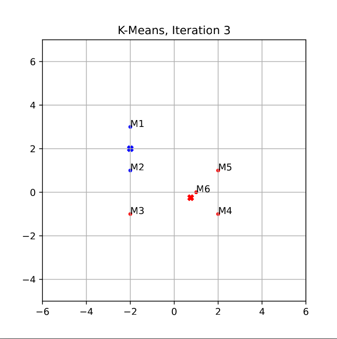
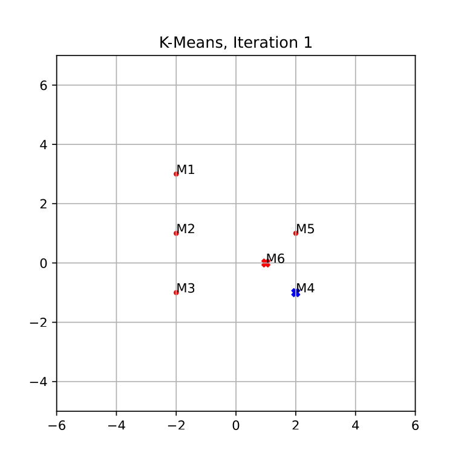 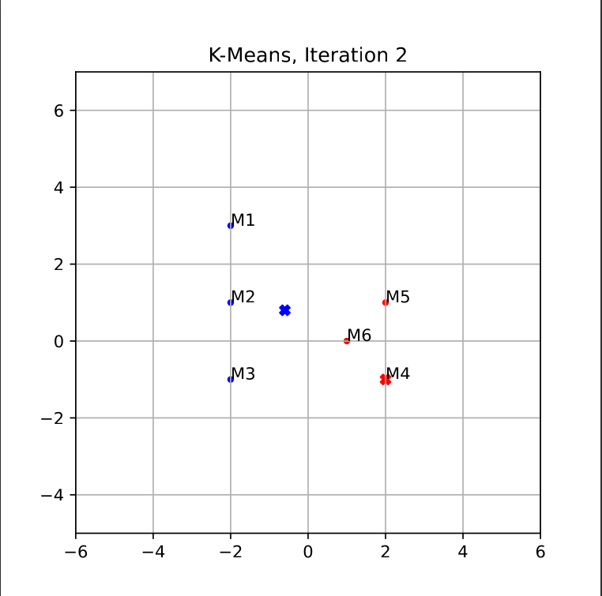 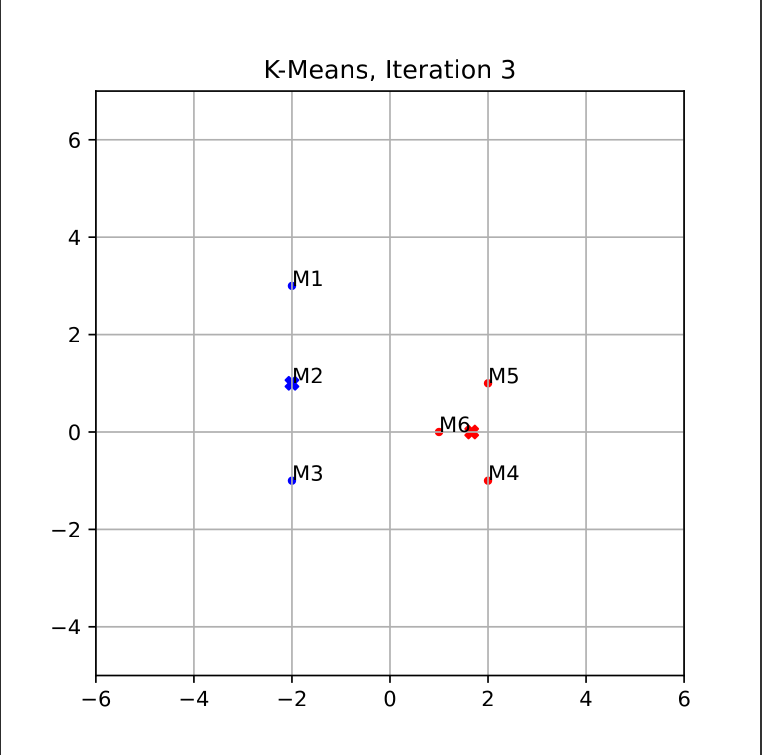
Les clusters obtenus sont différents , le point M3 étant dans le cluster 0 dans le premier cas et dans le cluster 1 dans le deuxième cas.
Le fichier kmeansWithLib.py contient le code de Kmeans avec la librairie Sklearn.
L'affichage est tel qu'il regroupe les élément (points du tableau initial en clusters numérotés de 0 à n, en attribuant à chaque élément du tableau le numéro de son cluster respectif.
Le fichier clustering_hierarchique.py contient le code de l'algorithme de clustering hierarchique. L'appel a la fonction getDentrogram permet de sauvegarder avec le parametre savePath= 'hierarchic_graphs/' les graphiques dans un fichier pdf dans le dossier hierarchic_graphs. La fonction main permet de lancer l'algorithme sur les deux jeux de données
Nous avons utilisé le jeu de données fourni dans l'énnoncé: [0.1, 0.9, 0.35, 0.8, 0.3, 0.4, 0.5, 0.6, 0.7, 0.2]
Graphique du Dendrogramme Single Link : 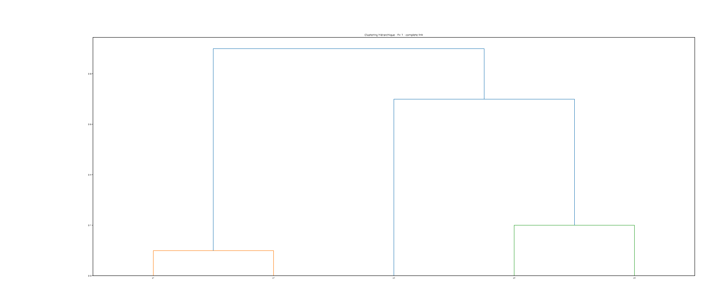
Graphique du Dendrogramme Complete Link : 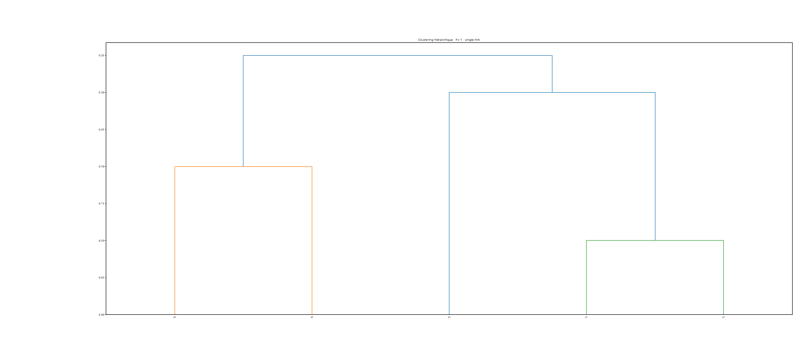
Nous obtenons bien le même graphique que dans l'énnoncé ce qui signifie que notre algorithme fonctionne correctement.
Nous avons utilisé l jeu de données fourni dans l'énnouncé : [0.1, 0.41, 0.64, 0.55, 0.47, 0.44, 0.35, 0.98, 0.85, 0.76] La fonction transformMatriceSimilToDistance permet de transformer une matrice de similarité en matrice de distance afin de pouvoir être utilisée par l'algorithme de clustering hierarchique.
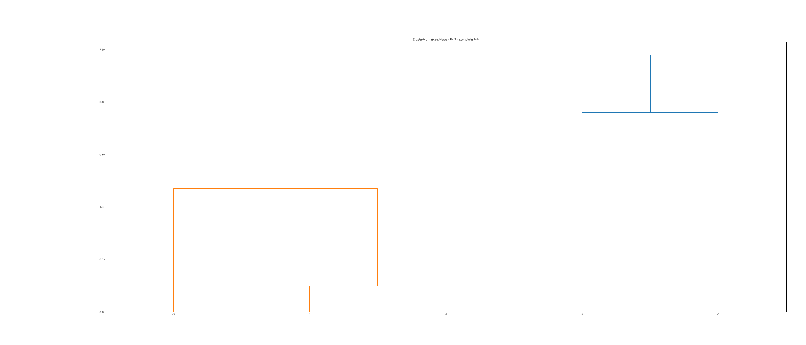
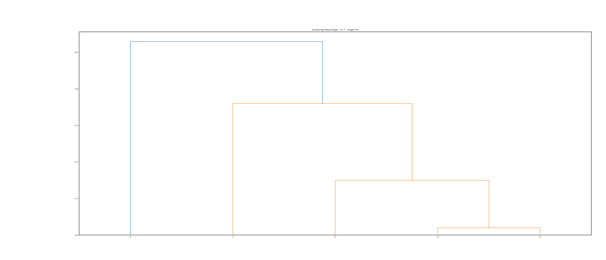
Nous obtenons bien le même graphique que dans l'énnoncé ce qui signifie que notre algorithme fonctionne correctement.
La fonction main du fichier etude_de_cas.py permet de lancer les deux algorithmes (kmeans et clustering hierarchique) sur les données des pays.
Le fichier etude_de_cas.py contient le code de l'étude de cas.
Tout d'abord afin d'exploiter les données qui nous était fourni dans le fichier Country-data.csv, nous avons créer une méthode parseCSV qui permet de lire le fichier csv et de retourner deux tableaux, les entêtes (le nom des pays) et les données.
une fois que nous avons ces donneées , nous avons utilisé le code fourni afin d'avoir notre tableau data_reduced qui est utilisable par nos algorithmes de clustering.
Nous appelons la fonction kmeans que nous avons initialement implémenté dans la partie 1 avec les données réduites des pays contenus dans data_reduced. Les centroides sont choisies aléatoirement.
Dans ce cas de figure il ya eu 8 itérations avant d'atteindre la convergence.
Voici le graphique des clusters finaux (iteration_data_country-8.pdf):
Nous voyons bien la présence de deux clusters (rouge et bleu)
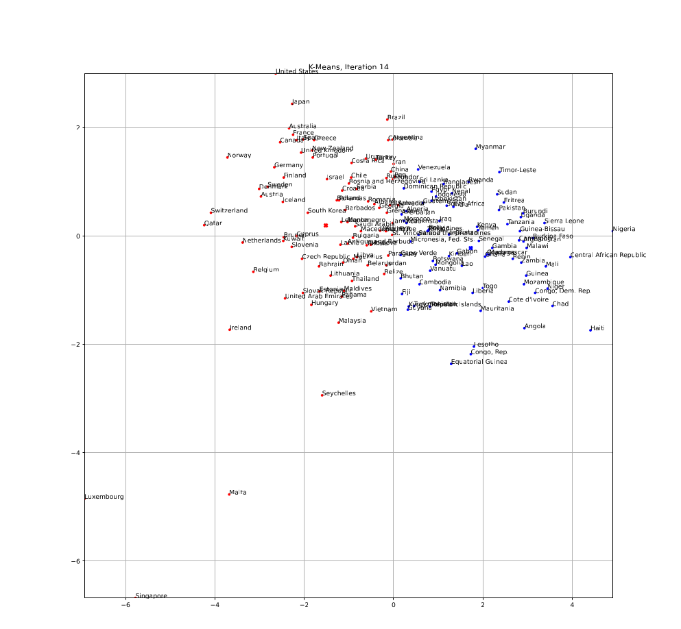
Dans ce cas de figure il ya eu 14 itérations avant d'atteindre la convergence.
Voici le graphique des clusters finaux (iteration_data_country2-14.pdf):
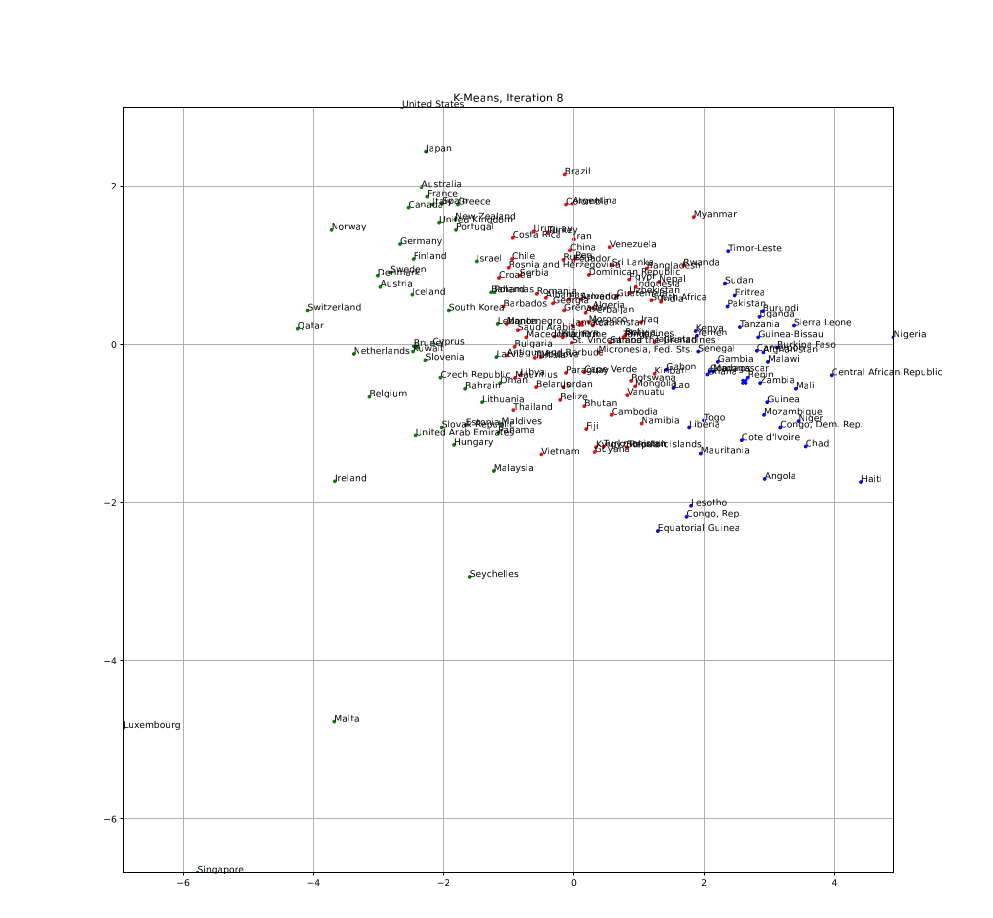
Nous voyons bien la présence de trois clusters (rouge , vert, bleu)
Dans les deux cas, les clusters divisent a peu pret equitablement les pays en fonction de leur données. Cependant nous pouvons douter de la pertinence de ces clusters, en effet, avec notre tirage aléatoire, les pays très éloignés des autres comme Luxembourg, Singapour et Malte sont dans le meme cluster que la Lituannie et le Liban qui sont presque au milieu de la partie dense du nuage de points. En deffinissant comme cluster initial un de ces pays marginaux nous pourrions obtenir des clusters plus pertinents.
La fonction genDistanceMatrix défini dans le fichier clustering_hierarchique.py permet de générer une matrice de distance à partir d'une liste de coordonnées de points. Nous pouvons donc générer la matrice de distance des pays en appellant genDistanceMatrix avec les données de data_reduced. Nous appellons la fonction getDentrogram, avec cette matrice de distance, pour obtenir les dendrogrammes.
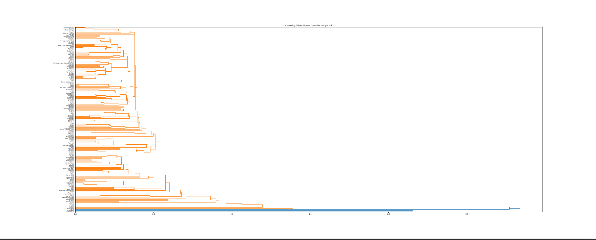
Les Dendrogrammes nous montrent bien la singularité de certains pays comme le Luxembourg, Singapour et Malte qui sont très éloignés des autres pays. Cependant, peu de distinctions peuvent etre faites entre les autres pays.
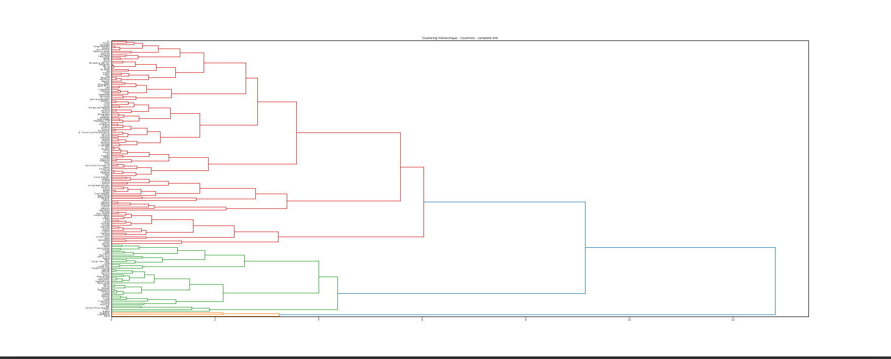
Comme avec SingleLink les pays marginaux sont bien distingués, de plus d'autres groupes peuvent etre établis, comme par exemple la quasi totalité des pays d'afrique regroupé en une seule branche (couleur verte sur notre graphique).